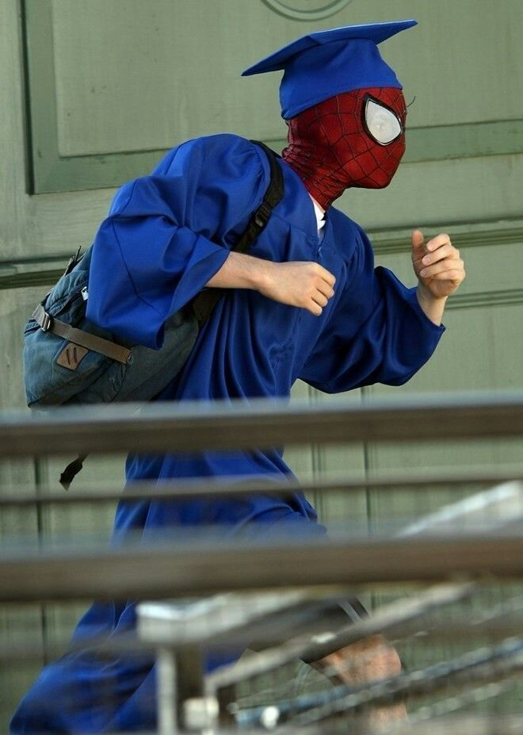
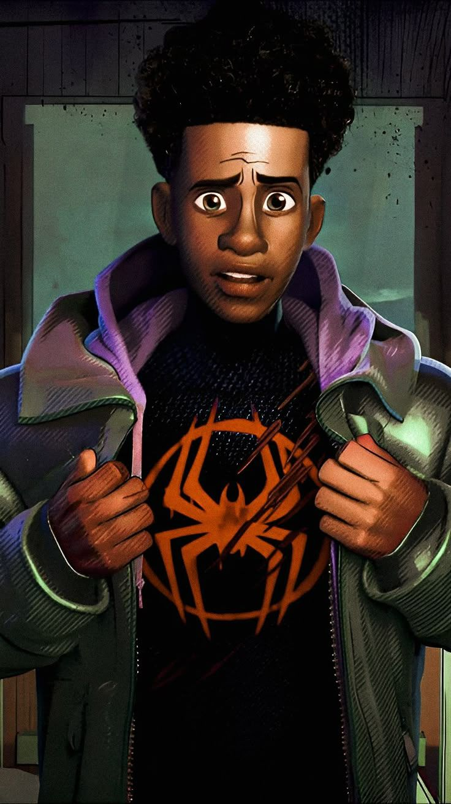
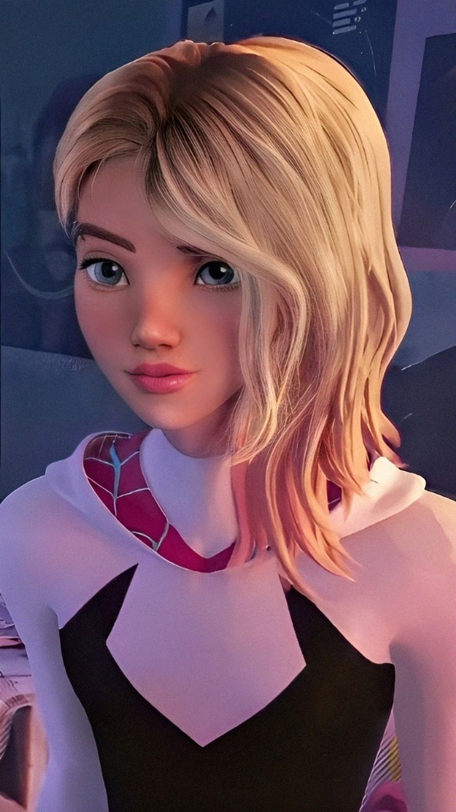
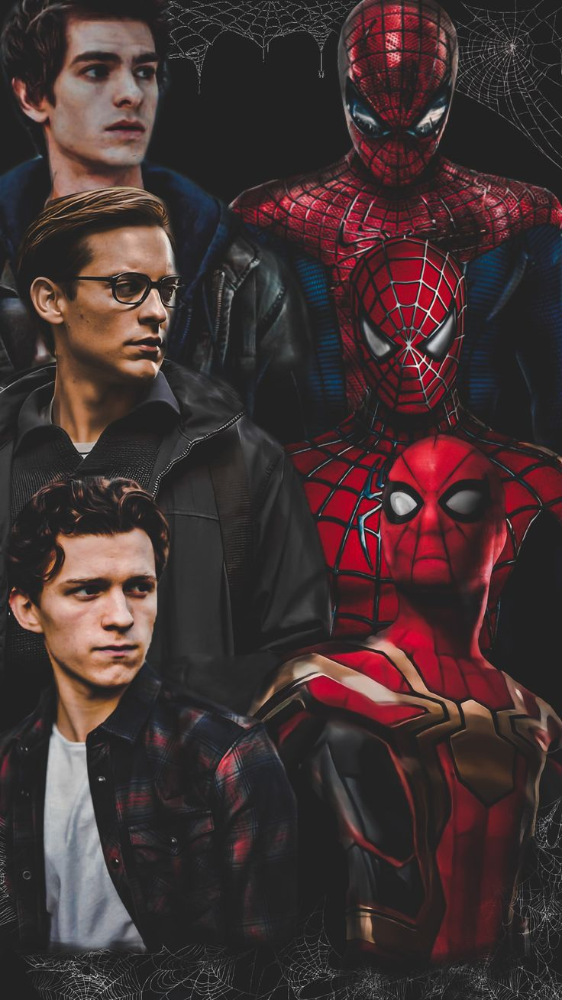
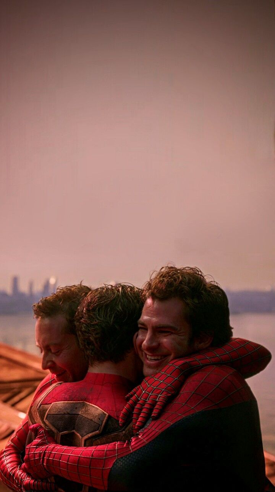
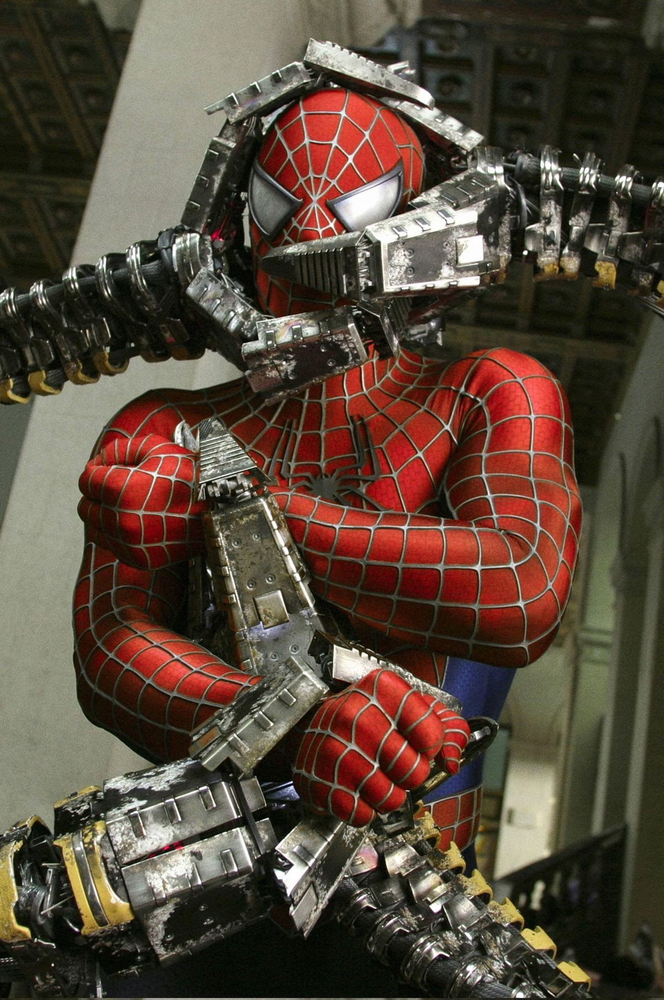
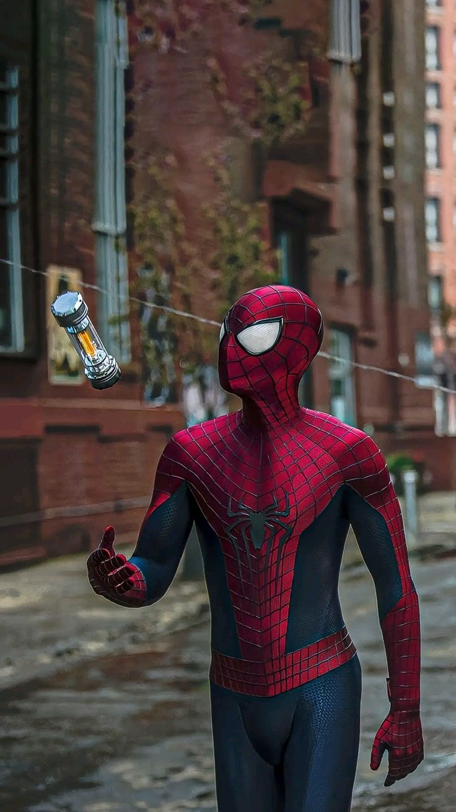
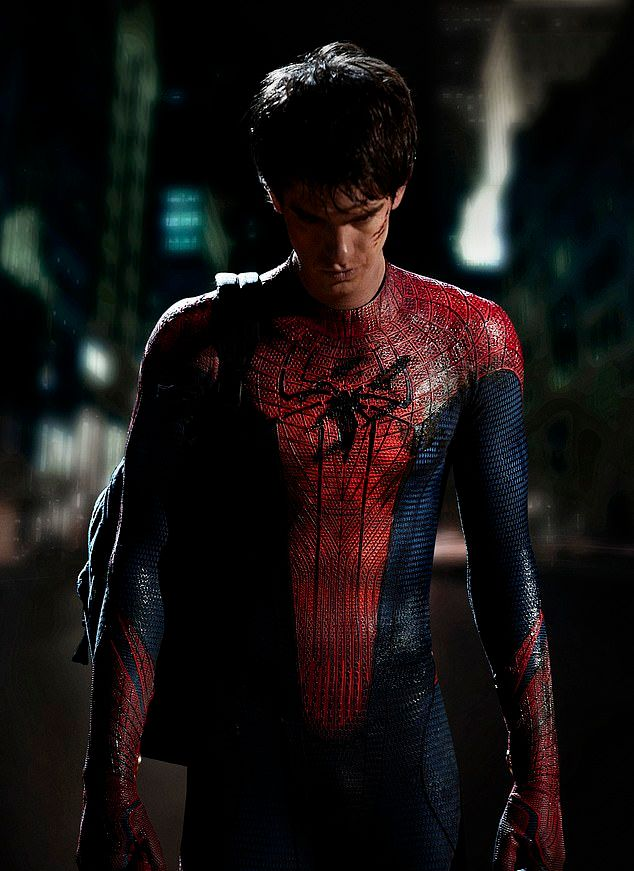
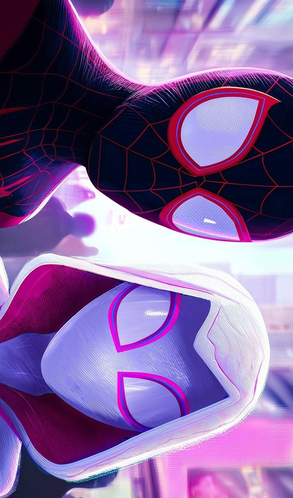
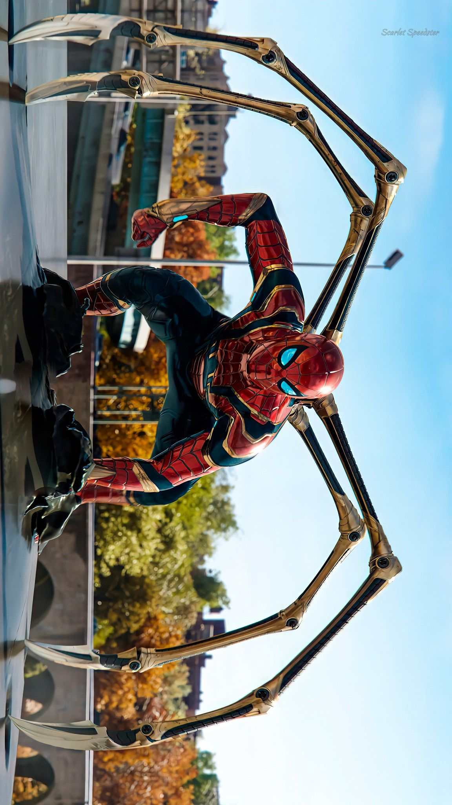

Peter Parker
É o Homem-Aranha, um super-herói da Marvel criado em 1962, conhecido como o "amigão da vizinhança" que equilibra sua vida de combate ao crime em Nova York com problemas pessoais
Cinematic Front-end Showcase
Um projeto de portfólio de alto impacto com GSAP e interface futurista, combinando narrativa visual, 3D e microinterações profissionais.
Enter the MultiverseCharacter Archive

É o Homem-Aranha, um super-herói da Marvel criado em 1962, conhecido como o "amigão da vizinhança" que equilibra sua vida de combate ao crime em Nova York com problemas pessoais

É um super-herói adolescente afro-latino de Nova York, conhecido como o segundo Homem-Aranha no universo Ultimate e, posteriormente, no universo principal da Marvel. Criado em 2011, ele se destaca pelo carisma, habilidades como "ataque venenoso

Mulher-Aranha ou Aranha-Fantasma (Terra-65), é uma super-heroína da Marvel que ganha poderes após ser picada por uma aranha radioativa. Ela é caracterizada pelo uniforme branco, preto e rosa, habilidades acrobáticas, agilidade sobre-humana e uso de lançadores de teia.

Representam diferentes eras e facetas do herói: o clássico/emocional, o ágil/moderno e o tecnológico/vingador
Connected Dimensions
Nesta seção, nós simulamos conexões dimensionais com visual 3D e camadas parallax, reforçando storytelling visual e domínio técnico em experiências interativas.
Visual Frames






Project Story
Este projeto foi criado como uma experiência interativa inspirada no universo do Spider-Man, utilizando tecnologias modernas de front-end para demonstrar habilidades em UI, animações e interatividade. Tendo como objetivo principal mostrar parte da história dos Spider´s e as cenas e personagens principais dos filmes.
Transmission Channel